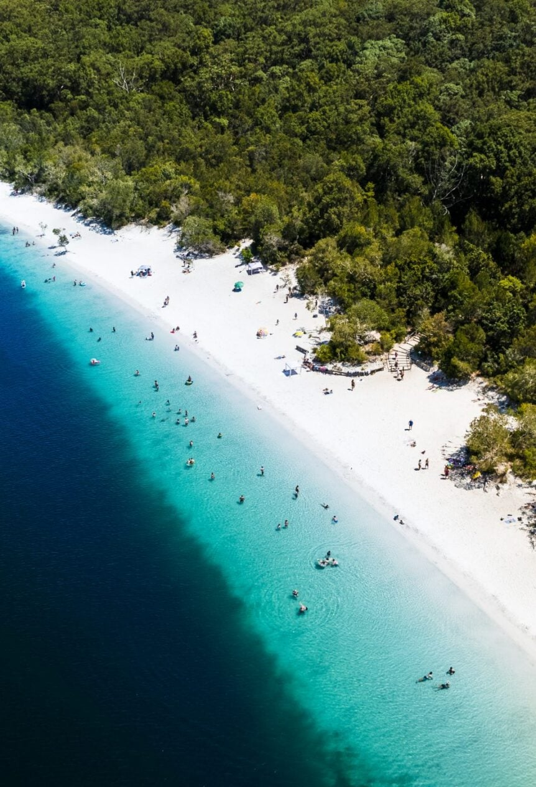
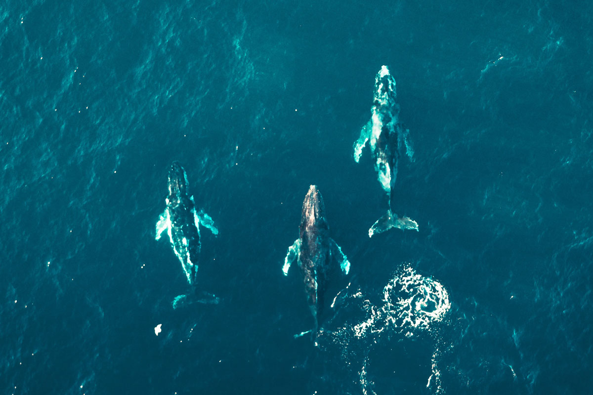
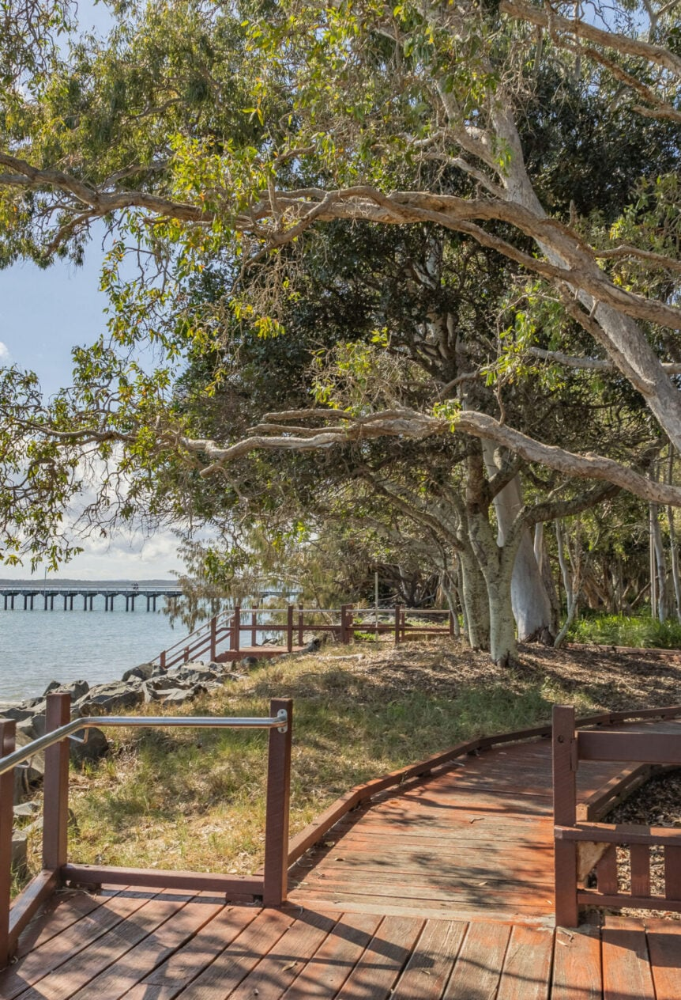
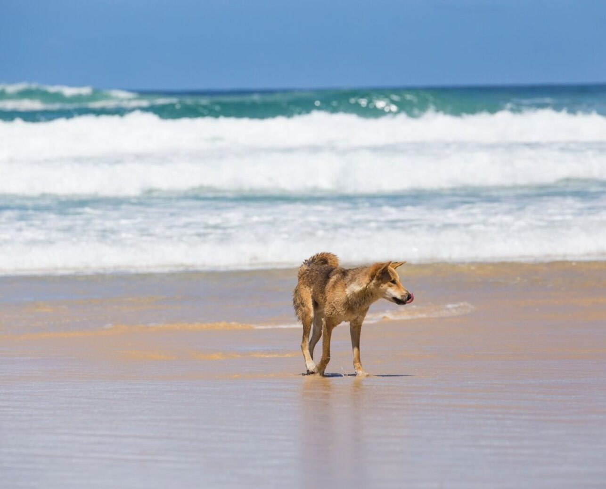
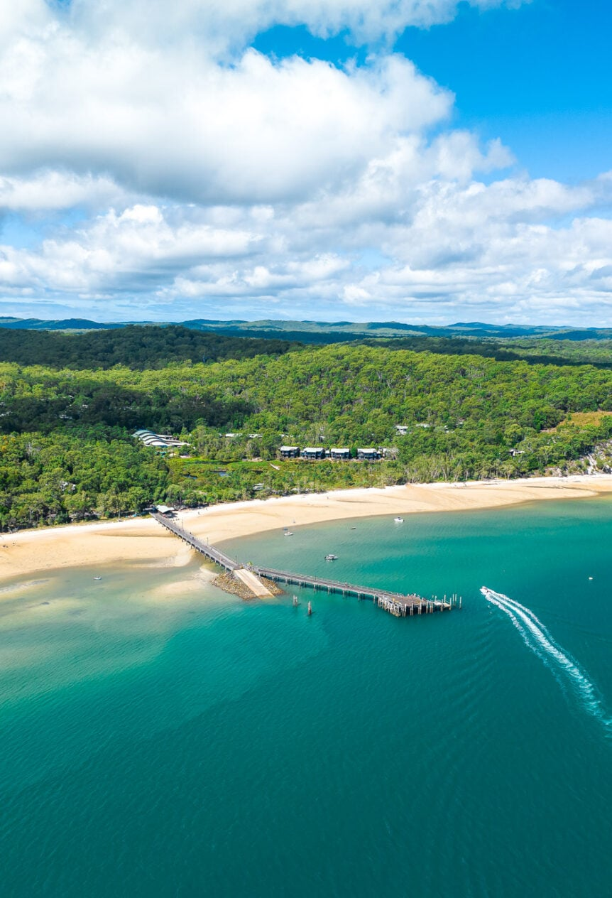

Lake McKenzie · K’gariNaturally extraordinaryK’gari
Freshwater blues. Ancient rainforest. A place to rediscover your sense of adventure.

Queensland’s Fraser Coast
Meet the gentle giants of Hervey Bay. Follow sandy tracks across K’gari. Wander heritage streets, then find your way back to the water. Take your time. Make it yours.

Lake McKenzie · K’gariNaturally extraordinaryFreshwater blues. Ancient rainforest. A place to rediscover your sense of adventure.

Hervey BayNaturally connectedSalt in the air, a slower pace and unforgettable encounters out on the water.
 MaryboroughNaturally intriguing
MaryboroughNaturally intriguingHeritage streets and stories waiting around the next corner. Take your time.

K’gariAncient rainforest. Clear freshwater lakes. An island shared with the remarkable wongari. K’gari is a place to slow down, look closer and feel part of something extraordinary.
Find your island adventure Give wongari space. Be dingo-safe.From an island sunrise to a close encounter out on the water.
Get your bearings with three places to start your trip, from the sheltered waters of Hervey Bay to the heritage streets of Maryborough and the beaches of K’gari.
Select a pin to explore. Zoom in to drag the map.
Walk the esplanade, swim in sheltered waters or head out on a whale watching trip.
Explore Hervey BayExplore freshwater lakes, rainforest and long beaches on the world’s largest sand island.
Explore K’gariDiscover heritage streets and stories along the Mary River.
Explore MaryboroughEvery season has its own kind of wonder. Find yours across the year.
| Phenomenon | Jan | Feb | Mar | Apr | May | Jun | Jul | Aug | Sep | Oct | Nov | Dec |
|---|---|---|---|---|---|---|---|---|---|---|---|---|
| Dugongs & DolphinsThe Great Sandy Strait is home to dugongs and dolphins year-round — one of the most important dugong habitats in the world. | ||||||||||||
| Turtle Hatchling SeasonTiny turtle hatchlings emerge and dash for the sea from January to April — a magical end to the nesting cycle. | ||||||||||||
| Manta Ray SeasonReef manta rays gather around Lady Elliot Island on the Southern Great Barrier Reef from May to September. | ||||||||||||
| Humpback Whale MigrationThousands of humpback whales rest in the sheltered waters of Hervey Bay on their southern migration — the calving and playground season runs July to November. | ||||||||||||
| Wildflower SeasonHeath and wallum wildflowers bloom across the Great Sandy region from August to October, carpeting the national parks in colour. | ||||||||||||
| Migratory ShorebirdsTens of thousands of migratory shorebirds feed on the Great Sandy Strait flats from September to April after flying from the Arctic. | ||||||||||||
| Coral SpawningAfter the November full moon the Southern Great Barrier Reef erupts in a synchronised coral spawn — an underwater snowstorm of new life. | ||||||||||||
| Loggerhead Turtle NestingLoggerhead and green turtles haul up onto Fraser Coast and K'gari beaches to nest through the warm months, November to February. |
Wildlife sightings are never guaranteed.

Kingfisher Bay · K’gariA beachside morning. An island escape. A campsite beneath the stars. Find a place that feels like your kind of getaway.
Find your stayWhether you’re travelling with the family, chasing an island adventure or simply slowing down, make the Fraser Coast your own.
| Feature | Detail |
|---|---|
| Location | Queensland, Australia — 3.5 hrs north of Brisbane |
| Key destination | K'gari (Fraser Island) — world's largest sand island, UNESCO World Heritage |
| Marine highlight | Hervey Bay — humpback whale watching capital of the world (June–November) |
| Heritage town | Maryborough — birthplace of Mary Poppins author P.L. Travers |
| Climate | Sub-tropical; warm year-round, dry season May–October |
| Getting there | Fly to Hervey Bay Airport or drive the Bruce Highway; ferry to K'gari from River Heads |
| Best for | Eco-tourism, whale watching, 4WD adventures, family beaches, heritage walks |
Explore offers from across the Fraser Coast.